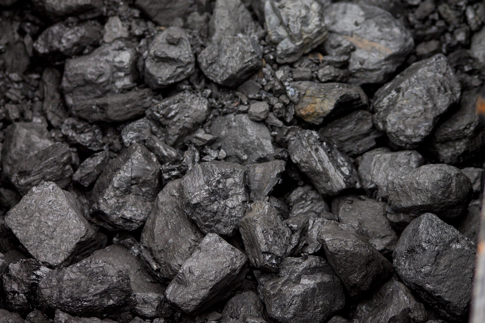
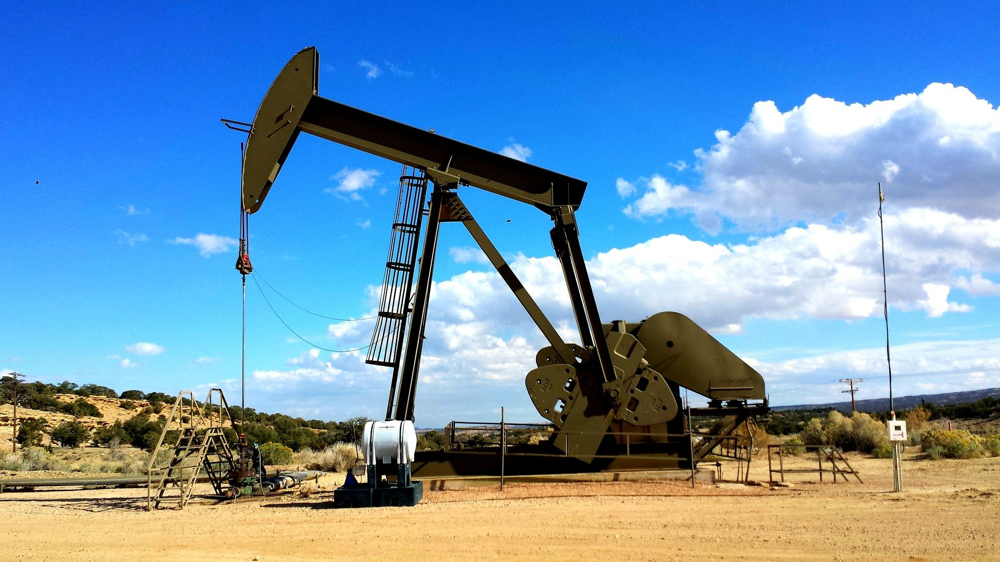
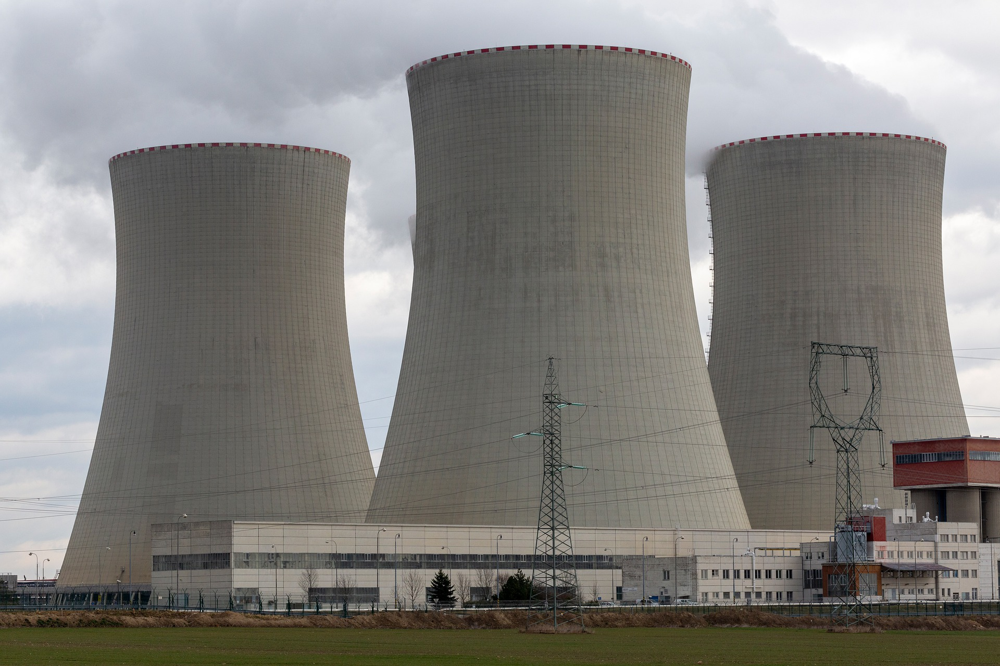

Coal plants burn coal in boilers that heat water into steam. This steam then turns a turbine to create electricity. |
 |
Oil and other similar fuels can be burned directly to boil water in a similar manner to coal, or the oil can be burned under pressure with the exhaust gasses being used to turn the turbine. |
 |
Nuclear plants also use steam to spin turnbines. the steam is generated by fuel rods placed into the water. These rods produce heat through nuclear fission, which creates steam. |
 |